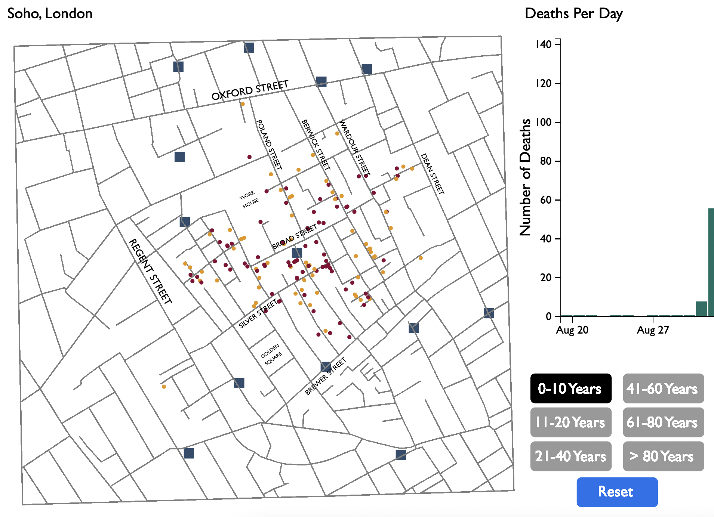
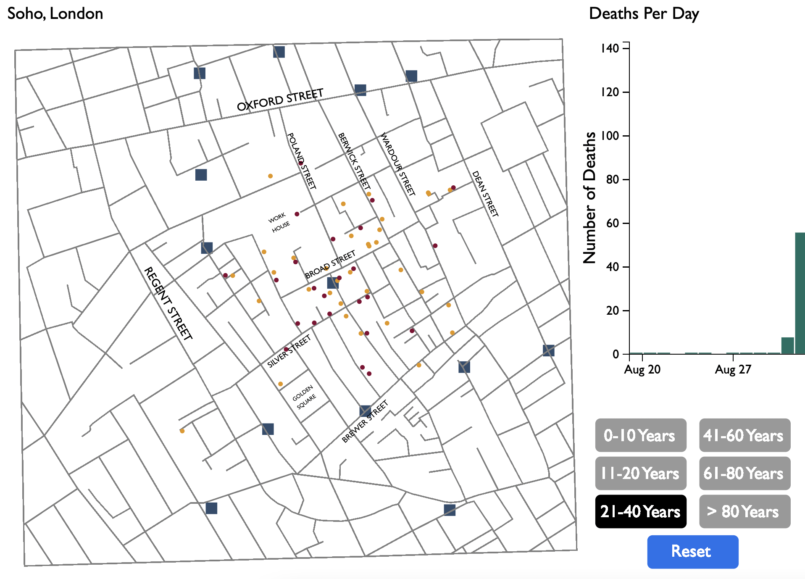

All the data (street coordinates, locations of the water pumps, each death location) was provided by my professor. Fictional demographic data was also provided to add a greater depth of field to the data and overall visualization capabilities.
Having zero experience with the D3 library, and very little experience with JavaScript and HTML in general, this was a tall order. An order that I had about a month to complete. At the beginning of the process it seemed like a long time. It definitely was not a long time. The learning curve was steep and I was able to finish just barely in time. I was waiting between working on the project for some of the class tutorials to come out through our online portal, but I could have begun diving in to D3 forums online by myself much sooner. All of that aside, I was able to piece together a working piece of code for, hopefully, a passing grade.
My process consisted of constant trial and error. Reading other code snippets, trying to get them to work with my code, data, and process. Help from my TA, and boyfriend. And a LOT of Googling. I also utilized a great D3 resource, “Interactive Data Visualization for the Web” by Scott Murray, which is a required text for the course.
I am currently pursuing a Master’s Certificate in Human-Computer Interaction with the goal of becoming a UX Designer. I really enjoyed the design aspects of this project, and will continue to iterate and refine those aspects. I went through multitude of color choices utilizing online color scheme pickers, my own preference, and visibility/usability guides. I made the conscious decision to use colors outside of the blue and pink spectrums that might be expected when comparing male and female populations. My placement of the two visualizations is based on the map being the most important tool for John Snow. If it weren’t for his placement of each death on the map he may never have discovered the source of the epidemic. The bar graph is supporting information so I wanted to be secondary in the left to right flow of the website.
The most interesting discovery I came across while working on this project was the difference in the number of deaths in each age group. From the data it appears that the younger and older age groups contain more deaths than those in the middle.



Diving into this project really proved to me that full-stack development is achievable. A feat I never thought I would even remotely come close to accomplishing.
You can learn more about John Snow by checking out this Wikipedia page.
You can learn more about John Snow by checking out this Wikipedia page. His work lead to immense improvements in water quality in London, as well as other cities. We can probably all thank him for our clean drinking and cleaning water that runs into our homes.
This project was created by me, Beau Neville. You can check out some of my other work here!